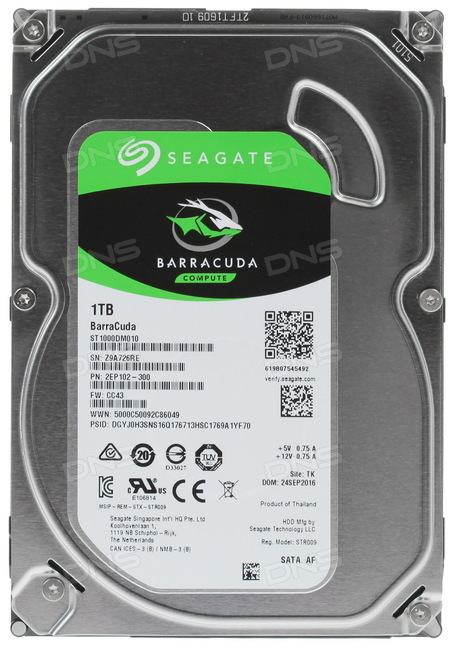

Жесткий диск Seagate 7200 BarraCuda [ST1000DM010] оснащен совершающим в минуту 7200 оборотов шпинделем, что в лучшую сторону влияет на производительность работы накопителя с данными. Емкость же Seagate 7200 BarraCuda [ST1000DM010] равна 1 терабайту – весьма неплохо, если только Вы не собираетесь держать у себя в ПК соразмерный с крупным сетевым порталом файловый архив.

| Характеристика | Значение |
|---|---|
| Модель | Seagate 7200 BarraCuda [ST1000DM010] |
| Объем HDD | 1 ТБ |
| Объем кэш-памяти | 64 МБ |
| Скорость вращения шпинделя | 7200 rpm |
| Интерфейс | SATA III |
Жесткий диск Seagate 7200 BarraCuda [ST1000DM010] оснащен совершающим в минуту 7200 оборотов шпинделем, что в лучшую сторону влияет на производительность работы накопителя с данными. Емкость же Seagate 7200 BarraCuda [ST1000DM010] равна 1 терабайту – весьма неплохо, если только Вы не собираетесь держать у себя в ПК соразмерный с крупным сетевым порталом файловый архив. Среднее время задержки описываемого HDD равно 4.16 мс, что немного, а объем кэш-памяти составляет 64 мегабайта. Состоящий из одной пластины накопитель весит всего 400 граммов и является при этом весьма компактным – габариты его равны 10.16x14.6x2 сантиметра. Радует и довольно высокая ударостойкость комплектующего, при работе которая составляет 80 G. Уровень шума агрегата невысок и колеблется в пределах 23-24 дБ, так что шум его работы Вас точно не побеспокоит. Потребление электричества тоже на уровне: 5.3 ватта – нормальный для HDD показатель.